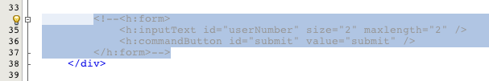
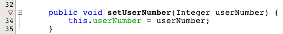
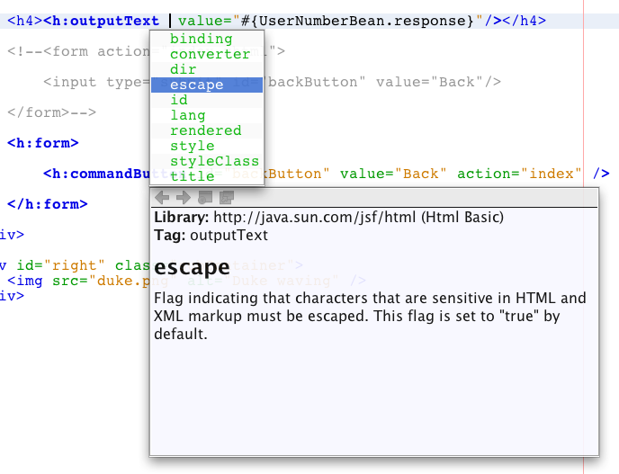

Apache NetBeans
Apache NetBeansLatest release
JavaServer Faces 2.x入門
| This tutorial needs a review. You can open a JIRA issue, or edit it in GitHub following these contribution guidelines. |
JavaServer Faces (JSF)は、Java Webアプリケーション用のユーザー・インタフェース(UI)フレームワークです。これは、Javaアプリケーション・サーバー上で実行され、UIをターゲット・クライアントにレンダリングするアプリケーションの記述と維持にかかる負荷を大幅に軽減するように設計されています。JSFは、次のような方法で使いやすさを実現します。
-
再利用可能なUIコンポーネントのセットからUIを簡単に構築できる
-
UIとの間でアプリケーション・データの移行を簡素化
-
サーバー・リクエスト間でのUIの状態管理を支援
-
クライアントが生成したイベントをサーバー側アプリケーション・コードに記述するための簡易モデルを提供
-
カスタムUIコンポーネントを簡単にビルドして再利用できる
JSFフレームワークの詳細は、Java EE 7チュートリアル、第12章のJavaServer Facesテクノロジを使用した開発を参照してください。
このチュートリアルでは、NetBeans IDEを使用してJSF 2.xサポートをWebアプリケーションに適用する方法を説明します。最初にJSF 2.xフレームワーク・サポートを基本的なWebアプリケーションに追加してから、次のタスクの実行に進みます。
-
リクエスト・データを処理するJSF管理対象Beanの作成
-
管理対象BeanをアプリケーションのWebページに記述
-
WebページをFaceletsテンプレート・ファイルに変換
NetBeans IDEは、JavaServer Facesのサポートを長期にわたって提供してきました。JSF 2.0およびJava EE 6のリリース以降、NetBeans IDEはJSF 2.0およびJSF 2.1のサポートを提供してきました。詳細は、NetBeans IDEでのJSF 2.xのサポートを参照してください。
このチュートリアルを完了するには、次のソフトウェアとリソースが必要です。
| ソフトウェアまたはリソース | 必須バージョン |
|---|---|
7.2、7.3、7.4、8.0、Java EEバンドル版 |
|
7または8 |
|
Open Source Edition 3.xまたは4 |
|
n/a |
*注意: *
-
NetBeans IDEのJavaバンドル版には、このチュートリアルに必要な、Java EE準拠サーバーのGlassFishサーバーも含まれています。
-
プロジェクトを、正常に機能するソリューションと比較するには、完成したサンプル・プロジェクトをダウンロードします。
WebアプリケーションへのJSF 2.xサポートの追加
まず、IDEでjsfDemo Webアプリケーション・プロジェクトを開きます。IDEでプロジェクトが開いたら、プロジェクトの「プロパティ」ウィンドウを使用して、フレームワーク・サポートを追加できます。
IDEで、JSF 2.xをサポートする新しいプロジェクトを作成することもできます。詳細は、JSF 2.xサポートを含む新しいプロジェクトの作成を参照してください。
-
IDEのメイン・ツールバーで「プロジェクトを開く」(
 )ボタンをクリックするか、[Ctrl]-[Shift]-[O] (Macの場合は[⌘]-[Shift]-[O])を押します。
)ボタンをクリックするか、[Ctrl]-[Shift]-[O] (Macの場合は[⌘]-[Shift]-[O])を押します。 -
「プロジェクトを開く」ダイアログで、展開したチュートリアル・プロジェクトを格納した場所に移動します。選択して「プロジェクトを開く」をクリックし、IDEで開きます。
*注意:*IDEのインストール時にJUnitプラグインをインストールしていない場合は、NetBeansプロジェクトを開くときにJUnitライブラリへの参照を解決するよう求められることがあります。
-
プロジェクトを実行して、ブラウザでどのように表示されるかを確認します。「プロジェクト」ウィンドウで「
jsfDemo」プロジェクト・ノードを右クリックして「実行」を選択するか、メイン・ツールバーの「プロジェクトの実行」( )ボタンをクリックします。プロジェクトがパッケージ化されてGlassFishサーバーにデプロイされ、ブラウザが開いて開始ページ(
)ボタンをクリックします。プロジェクトがパッケージ化されてGlassFishサーバーにデプロイされ、ブラウザが開いて開始ページ(index.xhtml)が表示されます。

Figure 1. プロジェクトを実行してブラウザで表示
-
「送信」ボタンをクリックします。レスポンス・ページ(
response.xhtml)が次のように表示されます。

Figure 2. 現在静的なページである開始ページとレスポンス・ページ
現在、開始ページとレスポンス・ページは静的なページで、`stylesheet.css`ファイルと`duke.png`イメージがあり、ブラウザからアクセスできる唯一のアプリケーション・ファイルです。
-
「プロジェクト」ウィンドウ([Ctrl]-[1]、Macの場合は[⌘]-[1])で、プロジェクト・ノードを右クリックし、「プロパティ」を選択して、「プロジェクト・プロパティ」ウィンドウを開きます。
-
「フレームワーク」カテゴリを選択し、「追加」ボタンをクリックします。
-
「フレームワークの追加」ダイアログ・ボックスで、「JavaServer Faces」を選択します。「OK」をクリックします。

Figure 3. 既存のプロジェクトへのJSFサポートの追加
JavaServer Facesを選択すると、様々な構成オプションが使用可能になります。「ライブラリ」タブで、プロジェクトがJSF 2.xライブラリにアクセスする方法を指定できます。使用可能なJSFバージョンは、IDEとGlassFishサーバーのバージョンによって異なります。デフォルト・オプションでは、サーバー(GlassFishサーバー)に含まれているライブラリを使用します。ただし、IDEではJSF 2.xライブラリもバンドルされます。プロジェクトで登録されているライブラリを使用する場合は、「登録されているライブラリ」オプションを選択できます。

Figure 4. JSF 2.xライブラリへのアクセスの指定
-
「構成」タブをクリックします。Facesサーブレットをプロジェクトのデプロイメント・ディスクリプタにどのように登録するかを指定できます。また、プロジェクトでFaceletsまたはJSPページを使用するかどうかを示すこともできます。

Figure 5. Facesサーブレット・オプションと優先言語の指定
プロジェクトで使用する様々なJSFコンポーネント・スイートを「コンポーネント」タブで簡単に構成することもできます。コンポーネント・スイートを使用するには、必要なライブラリをダウンロードし、Antライブラリ・マネージャを使用して、コンポーネント・スイートのライブラリを含む新しいライブラリを作成する必要があります。

Figure 6. Facesサーブレット・オプションと優先言語の指定
-
「OK」をクリックして変更を確定し、「プロジェクト・プロパティ」ウィンドウを終了します。
プロジェクトにJSFサポートを追加すると、プロジェクトの`web.xml`デプロイメント・ディスクリプタが変更されて次のようになります。変更場所は*太字*で示されています。
<web-app version="3.0" xmlns="http://java.sun.com/xml/ns/javaee" xmlns:xsi="http://www.w3.org/2001/XMLSchema-instance" xsi:schemaLocation="http://java.sun.com/xml/ns/javaee http://java.sun.com/xml/ns/javaee/web-app_3_0.xsd">
*<context-param>
<param-name>javax.faces.PROJECT_STAGE</param-name>
<param-value>Development</param-value>
</context-param>
<servlet>
<servlet-name>Faces Servlet</servlet-name>
<servlet-class>javax.faces.webapp.FacesServlet</servlet-class>
<load-on-startup>1</load-on-startup>
</servlet>
<servlet-mapping>
<servlet-name>Faces Servlet</servlet-name>
<url-pattern>/faces/*</url-pattern>
</servlet-mapping>*
<welcome-file-list>
<welcome-file>*faces/*index.xhtml</welcome-file>
</welcome-file-list>
</web-app>*重要: *例に示すように、web.xml`に<welcome-file>`エントリが1つのみ含まれ、このエントリに'`faces/'が含まれていることを確認します。これにより、プロジェクトの開始ページ(`index.xhtml)が、Facesサーブレットを介してブラウザに表示されるようになります。Faceletsタグ・ライブラリ・コンポーネントが正しくレンダリングされるようにするには、この処理が必要です。
Facesサーブレットがプロジェクトに登録され、index.xhtml`開始ページをリクエストすると、ページはFacesサーブレットを介して渡されるようになります。また、`PROJECT_STAGE`コンテキスト・パラメータのエントリも追加されています。このパラメータを「`Development」に設定すると、アプリケーションをデバッグするときに有用な情報が提供されます。参照: 詳細は、http://blogs.oracle.com/rlubke/entry/jsf_2_0_new_feature2。
JSFライブラリを見つけるには、「プロジェクト」ウィンドウでプロジェクトの「ライブラリ」ノードを展開します。GlassFish Server 3.1.2またはGlassFish Server 4に含まれているデフォルトのライブラリを使用している場合、これは「GlassFish Server」ノードに表示される`javax.faces.jar`です。(古いバージョンのGlassFishを使用している場合は、`jsf-api.jar`および`jsf-impl.jar`ライブラリが`javax.faces.jar`のかわりに表示されます。)
IDEのJSF 2.xサポートには、主にJSF固有の多数のウィザード、およびFaceletsエディタで提供される特別な機能が含まれています。これらの機能については、以降の手順で説明します。詳細は、NetBeans IDEでのJSF 2.xのサポートを参照してください。
管理対象Beanの作成
JSFの管理対象Beanを使用して、ユーザー・データを処理し、リクエスト間でそれを保持することができます。管理対象Beanは、データの格納に使用できるPOJO (プレーン・オールドJavaオブジェクト)です。これは、JSFフレームワークを使用してGlassFishサーバーなどのコンテナで管理されます。
POJOは基本的に、publicで引数のないコンストラクタを格納し、プロパティがJavaBeans命名規則に準拠するJavaクラスです。
プロジェクトを実行して生成された静的ページを見ると、ユーザーが入力した数値が現在選択されている数値と一致するかどうか、また、この結果に適した表示が返されるかどうかを判断する機構が必要です。IDEの管理対象Beanウィザードを使用して、この目的に応じた管理対象Beanを作成します。次の項で作成するFaceletsページは、ユーザーが入力する数値と生成されたレスポンスにアクセスする必要があります。これを有効にするには、`userNumber`および`response`プロパティを管理対象Beanに追加します。
管理対象Beanウィザードの使用
-
「プロジェクト」ウィンドウで「
jsfDemo」プロジェクト・ノードを右クリックし、「新規」>「JSF管理対象Bean」を選択します。(「管理対象Bean」が表示されない場合は、「その他」を選択します。次に、「JavaServer Faces」カテゴリから「JSF管理対象Bean」オプションを選択します。「次」をクリックします。) -
ウィザードで、次の情報を入力します。
-
クラス名: UserNumberBean
-
パッケージ: guessNumber
-
名前: UserNumberBean
-
スコープ: session
-

Figure 7. JSF管理対象Beanウィザードを使用した新しい管理対象Beanの作成
-
「終了」をクリックします。`UserNumberBean`クラスが生成され、エディタで開かれます。次の注釈(*太字*で表示)を確認します。
package guessNumber;
import javax.faces.bean.ManagedBean;
import javax.faces.bean.SessionScoped;
/**
*
* @author nbuser
*/
*@ManagedBean(name="UserNumberBean")
@SessionScoped*
public class UserNumberBean {
/** Creates a new instance of UserNumberBean */
public UserNumberBean() {
}
}ここではJSF 2.xを使用しているため、注釈を使用して、JSF固有のコンポーネントをすべて宣言できます。以前のバージョンでは、Faces構成ファイル(faces-config.xml)で宣言する必要がありました。
すべてのJSF 2.1注釈を確認するには、Faces管理対象Beanの注釈の仕様を参照してください。
コンストラクタの作成
`UserNumberBean`コンストラクタは、0から10の間のランダムな数値を生成し、インスタンス変数に格納します。これが、アプリケーションのビジネス・ロジックの一部を形成します。
-
`UserNumberBean`クラスのコンストラクタを定義します。次のコードを入力します(変更箇所は*太字*で表示)。
public class UserNumberBean {
*Integer randomInt;*
/** Creates a new instance of UserNumberBean */
public UserNumberBean() {
*link:http://docs.oracle.com/javase/7/docs/api/java/util/Random.html[+Random+] randomGR = new Random();
randomInt = new Integer(randomGR.link:http://docs.oracle.com/javase/7/docs/api/java/util/Random.html#nextInt%28int%29[+nextInt+](10));
System.out.println("Duke's number: " + randomInt);*
}
}このコードは0から10の間のランダムな数値を生成し、その数値をサーバー・ログに出力します。
-
インポートを修正します。そのためには、エディタの左マージンに表示されるヒント・バッチ(
 )をクリックし、`java.util.Random`をクラスにインポートするオプションを選択します。
)をクリックし、`java.util.Random`をクラスにインポートするオプションを選択します。 -
プロジェクトを再度実行します(「プロジェクトの実行」(
)ボタンをクリックするか、[F6] (Macの場合は[fn]-[F6])を押します)。プロジェクトを実行すると、サーバーのログ・ファイルが「出力」ウィンドウに自動的に開かれます。

Figure 8. 「出力」ウィンドウにサーバーのログ・ファイルが自動的に開きます。
コンストラクタで示されるように、出力には`Duke’s number: `が表示されません。`UserNumberBean`オブジェクトは作成されませんでした。これは、JSFがデフォルトで_遅延インスタンス化_を使用するためです。つまり、特定のスコープ内のBeansは、アプリケーションで必要とされたときにのみ作成され、インスタンス化されます。
`@ManagedBean`注釈用のJavadocには、次のように記載されています。
`eager()`属性の値が`true`で、`managed-bean-scope`の値がapplicationの場合は、アプリケーションの開始時にランタイムがこのクラスをインスタンス化する必要があります。このインスタンス化とインスタンスの格納は、他のリクエストを処理する前に実行される必要があります。_eager_の値が指定されていないか`false`の場合、または`managed-bean-scope`がapplication以外の場合は、デフォルトの「遅延」インスタンス化と管理対象Beanのスコープ指定記憶域が生じます。
-
`UserNumberBean`はセッション・スコープ指定されているため、`Serializable`インタフェースを実装させます。
@ManagedBean(name="UserNumberBean")
@SessionScoped
public class UserNumberBean *implements Serializable* {ヒント・バッジ( )を使用して、`java.io.Serializable`をクラスにインポートします。
)を使用して、`java.io.Serializable`をクラスにインポートします。
プロパティの追加
次の項で作成するFaceletsページは、ユーザーが入力する数値と生成されたレスポンスにアクセスする必要があります。これを容易にするため、`userNumber`および`response`プロパティをクラスに追加します。
-
まず、`userNumber`という名前の`Integer`を宣言します。
@ManagedBean(name="UserNumberBean")
@SessionScoped
public class UserNumberBean implements Serializable {
Integer randomInt;
*Integer userNumber;*-
エディタ内で右クリックし、「コードを挿入」を選択します([Alt]-[Insert]、Macの場合は[Ctrl]-[I])。取得メソッドおよび設定メソッドを選択します。

Figure 9. IDEを使用した、プロパティのアクセッサ・メソッドの生成
-
「
userNumber:Integer」オプションを選択します。「生成」をクリックします。

Figure 10. IDEを使用した、プロパティのアクセッサ・メソッドの生成
`getUserNumber()`および`setUserNumber(Integer userNumber)`メソッドがクラスに追加されます。
-
`response`プロパティを作成します。`response`という名前の`String`を宣言します。
@ManagedBean(name="UserNumberBean")
@SessionScoped
public class UserNumberBean implements Serializable {
Integer randomInt;
Integer userNumber;
*String response;*-
`response`の取得メソッドを作成します。(このアプリケーションでは設定メソッドは必要ありません。)前出のステップ2で示したIDEの「コードを生成」ポップアップを使用して、テンプレート・コードを生成することもできます。ただし、このチュートリアルでは、単純に次のメソッドをクラスに貼り付けます。
public String getResponse() {
if ((userNumber != null) && (userNumber.link:http://download.oracle.com/javase/6/docs/api/java/lang/Integer.html#compareTo(java.lang.Integer)[+compareTo+](randomInt) == 0)) {
//invalidate user session
FacesContext context = FacesContext.getCurrentInstance();
HttpSession session = (HttpSession) context.getExternalContext().getSession(false);
session.invalidate();
return "Yay! You got it!";
} else {
return "<p>Sorry, " + userNumber + " isn't it.</p>"
+ "<p>Guess again...</p>";
}
}このメソッドでは2つの関数が実行されます。
1. ユーザーが入力した数値(userNumber)がセッション用に生成されたランダムな数値(randomInt)と等しいかどうか、および`String`レスポンスが返されるかどうかがテストされます。
2. ユーザーが正しい数値を推測した場合(たとえば`userNumber`と`randomInt`が正しい場合)、ユーザー・セッションは無効化されます。ユーザーが再度操作する場合に新しい数値が生成されるようにするには、この処理が必要です。
-
エディタを右クリックし、「インポートを修正」を選択します([Alt]-[Shift]-[I]、Macの場合は[⌘]-[Shift]-[I])。次の項目用に、インポート文が自動的に作成されます。
-
javax.servlet.http.HttpSession -
javax.faces.context.FacesContext
-
エディタ内の項目上で[Ctrl]-[Space]を押すと、コード補完による候補とドキュメント・サポートを呼出しできます。`FacesContext`で[Ctrl]-[Space]を押して、Javadocのクラス説明を表示します。

Figure 11. [Ctrl]-[Space]の押下によるコード補完とドキュメント・サポートの呼出し
ドキュメント・ウィンドウの「Webブラウザ」( )アイコンをクリックし、外部WebブラウザでJavadocを開きます。
)アイコンをクリックし、外部WebブラウザでJavadocを開きます。
ページへの管理対象Beanの接続
JSFの主な目的の1つは、POJOおよびPOJOとアプリケーションのビューとの相互作用を管理するために、ボイラープレート・コードを記述する必要性を除去することです。前の項で、アプリケーションを実行したときにJSFが`UserNumberBean`オブジェクトをインスタンス化したのがこの例です。この概念は制御の反転 (IoC)と呼ばれ、コンテナがアプリケーションの一部を管理できるようにするものです。これがない場合、開発者は反復的なコードを記述する必要があります。
前の項では、0から10の間のランダムな数値を生成する管理対象Beanを作成しました。また、ユーザーが入力する数値を表す`userNumber`プロパティと、ユーザーの推測に対するレスポンスを表す`response`プロパティも作成しました。
この項では、`UserNumberBean`とそのプロパティをWebページで使用する方法について説明します。JSFでは、式言語(EL)を使用して実行できます。式言語を使用して、アプリケーションのWebページに含まれているJSFのUIコンポーネントにプロパティ値をバインドします。この項では、JSF 2.xの暗黙的なナビゲーション機能を活用してindexページとresponseページとの間を移動する方法も説明します。
IDEには、エディタ内の項目上で[Ctrl]-[Space]を押すことによって呼出しできる、コード補完とドキュメント機能によるサポートも用意されています。
まず`index.xhtml`を変更してから、`response.xhtml`を変更します。両方のページで、HTMLフォーム要素を、JSF HTMLタグ・ライブラリで定義されているJSFの対応する要素で置き換えます。次に、JSF式言語を使用して、プロパティ値と選択したUIコンポーネントをバインドします。
index.xhtml
-
エディタで`index.xhtml`ページを開きます。「プロジェクト」ウィンドウで「
index.xhtml」ノードをダブルクリックするか、[Alt]-[Shift]-[O]を押して「ファイルに移動」ダイアログを使用します。
indexページとresponseページの両方に、ここで必要なJSF UIコンポーネントがすでに含まれています。それらをコメント解除し、現在使用しているHTML要素をコメントアウトします。
-
HTMLフォーム要素をコメントアウトします。これを行うには、次のイメージのHTMLフォーム要素を強調表示し、[Ctrl]-[/] (Macの場合は[⌘]-[/])を押します。
*注意: *強調表示するには、マウスを使用してエディタ内でクリックしてドラッグするか、キーボードを使用して、[Shift]を押しながら矢印キーを押します。

Figure 12. コードを強調表示した後の[Ctrl]-[/]の押下によるコードのコメントアウト
[Ctrl]-[/] (Macの場合は[⌘]-[/])を使用して、エディタ内のコメントを切り替えます。JavaやCSSなど、他のファイル・タイプにこのキーボード・ショートカットを適用することもできます。
-
JSF HTMLフォーム・コンポーネントをコメント解除します。次のイメージに示すように、コンポーネントを強調表示して[Ctrl]-[/] (Macの場合は[⌘]-[/])を押します。
*注意:*コードのコメントを外すには[Ctrl]-[/]を2回押すことが必要な場合があります。

Figure 13. コメントアウトされたコードを強調表示した後の[Ctrl]-[/]の押下によるコメント解除
JSF HTMLフォーム・コンポーネントをコメント解除すると、<h:form>、<h:inputText>`および<h:commandButton>`タグが宣言されていないことがエディタに表示されます。

Figure 14. エディタに表示された、宣言されていないコンポーネントに関するエラー・メッセージ
-
これらのコンポーネントを宣言するには、IDEのコード補完を使用して、タグ・ライブラリ名前空間をページの`<html>`タグに追加します。宣言されていないいずれかのタグにカーソルを置き、[Alt]-[Enter]を押して提案されるタグ・ライブラリを追加します。(複数のオプションがある場合は、エディタに表示されているタグを選択してから[Enter]を押してください。)JSF HTMLタグ・ライブラリ名前空間が`<html>`タグ(次に*太字*で表示)に追加され、エラー表示が消えます。
*注意:*IDEでタグ・ライブラリを追加するオプションが表示されない場合、 <html> 要素を手動で変更する必要があります。
<html xmlns="http://www.w3.org/1999/xhtml"
*xmlns:h="http://xmlns.jcp.org/jsf/html"*>-
JSF式言語を使用して、`UserNumberBean`の`userNumber`プロパティを`inputText`コンポーネントにバインドします。`value`属性は、レンダリングされたコンポーネントの現在の値を指定するために使用できます。次の*太字*で表示されているコードを入力します。
<h:form>
<h:inputText id="userNumber" size="2" maxlength="2" *value="#{UserNumberBean.userNumber}"* />JSF式言語では`#{}`構文を使用します。これらの区切り文字内で、管理対象Beanの名前と、適用するBeanプロパティを、ドット(.)で区切って指定します。これで、フォーム・データがサーバーに送られると、プロパティの設定メソッド(setUserNumber())を使用して、値が自動的に`userNumber`プロパティに保存されます。また、ページがリクエストされて`userNumber`の値がすでに設定されている場合、レンダリングされる`inputText`コンポーネントに値が自動的に表示されます。詳細は、Java EE 7チュートリアル: 12.1.2項の式言語を使用した管理対象Beanの参照を参照してください。
-
フォーム・ボタンをクリックして呼び出されたリクエストの宛先を指定します。フォームのHTMLバージョンでは、`<form>`タグの`action`属性を使用してこれを実行できました。JSFの場合は、`commandButton`の`action`属性を使用できます。また、JSF 2.xの暗黙的なナビゲーション機能により、宛先のファイルの名前を指定するのみで済みます。ファイル拡張子は不要です。
次の*太字*で表示されているコードを入力します。
<h:form>
<h:inputText id="userNumber" size="2" maxlength="2" value="#{UserNumberBean.userNumber}" />
<h:commandButton id="submit" value="submit" *action="response"* />
</h:form>JSFランタイムは、response`という名前のファイルを検索します。リクエスト元のファイル(`index*.xhtml*)で使用されているのと同じファイル拡張子であると想定し、元のファイルと同じディレクトリ内(webrootなど)で`response.xhtml`ファイルを探します。
注意: JSF 2.xは、開発者のタスクを容易にすることを目的としています。このプロジェクトでJSF 1.2を使用している場合は、Faces構成ファイルでナビゲーション・ルールを次のように宣言する必要があります。
<navigation-rule>
<from-view-id>/index.xhtml</from-view-id>
<navigation-case>
<from-outcome>response</from-outcome>
<to-view-id>/response.xhtml</to-view-id>
</navigation-case>
</navigation-rule>以降のステップ7から12は、オプションです。プロジェクトをすばやくビルドする場合は、response.xhtmlに進みます。
-
前出のEL式でリクエストを処理するときに`setUserNumber()`メソッドが実際にコールされるかどうかをテストします。これを行うには、IDEのJavaデバッガを使用します。
`UserNumberBean`クラスに切り替えます([Ctrl]-[Tab]を押し、一覧からファイルを選択します。)`setUserNumber()`メソッドの署名にブレークポイントを設定します。これを行うには、左マージンをクリックします。赤のバッジが表示され、メソッドのブレークポイントが設定されたことを示します。

Figure 15. エディタの左マージンのクリックによるブレークポイントの設定
-
IDEのメイン・ツールバーにある「プロジェクトをデバッグ」(
 )ボタンをクリックします。デバッグ・セッションが開始され、プロジェクトの開始ページがブラウザに表示されます。
)ボタンをクリックします。デバッグ・セッションが開始され、プロジェクトの開始ページがブラウザに表示されます。
注意:
-
アプリケーションのデバッグ用のサーバー・ポートの確認を求められることがあります。
-
「プロジェクトをデバッグ」ダイアログが表示されたら、デフォルトのサーバー側Javaオプションを選択して、「デバッグ」をクリックします。
-
ブラウザで、フォームに数値を入力し、「送信」ボタンをクリックします。
-
IDEに切り替え、`UserNumberBean`クラスを確認します。デバッガが`setUserNumber()`メソッド内で一時停止されています。
-

Figure 16. ブレークポイントによるデバッガの一時停止
-
デバッガの「変数」ウィンドウを開きます(「ウィンドウ」>「デバッグ」>「変数」を選択するか、[Ctrl]-[Shift]-[1]を押します)。デバッガが一時停止されている場所の変数値が表示されます。

Figure 17. デバッガの「変数」ウィンドウを使用した変数値のモニター
前出のイメージでは、setUserNumber()`署名の`userNumber`変数に、値`4`が指定されています。(数値4がフォームに入力されたため。)「`this」は、ユーザー・セッション用に作成された`UserNumberBean`オブジェクトを参照します。その下にある`userNumber`プロパティの値は、現在`null`と表示されています。
-
デバッガのツールバーで、「ステップ・イン」(
 )ボタンをクリックします。デバッガは、現在一時停止されている行を実行します。「変数」ウィンドウがリフレッシュされ、実行による変更が表示されます。
)ボタンをクリックします。デバッガは、現在一時停止されている行を実行します。「変数」ウィンドウがリフレッシュされ、実行による変更が表示されます。

Figure 18. コードのステップ実行時の「変数」ウィンドウのリフレッシュ
`userNumber`プロパティは、フォームに入力された値に設定されます。
-
メイン・メニューから「デバッグ」→「デバッガ・セッションを終了」([Shift]-[F5]、Macでは[Shift]-[Fn]-[F5])を選択して、デバッガを停止します。
response.xhtml
-
エディタで`response.xhtml`ページを開きます。「プロジェクト」ウィンドウで「
response.xhtml」ノードをダブルクリックするか、[Alt]-[Shift]-[O]を押して「ファイルに移動」ダイアログを使用します。 -
HTMLフォーム要素をコメントアウトします。HTML`<form>`の開始タグと終了タグ、およびそれらのタグ間にあるコードを強調表示し、[Ctrl]-[/] (Macの場合は[⌘]-[/])を押します。
*注意: *強調表示するには、マウスを使用してエディタ内でクリックしてドラッグするか、キーボードを使用して、[Shift]を押しながら矢印キーを押します。
-
JSF HTMLフォーム・コンポーネントをコメント解除します。`<h:form>`の開始タグと終了タグ、およびそれらのタグ間にあるコードを強調表示し、[Ctrl]-[/] (Macの場合は[⌘]-[/])を押します。
この時点では、`<body>`タグ間のコードは次のようになります。
<body>
<div id="mainContainer">
<div id="left" class="subContainer greyBox">
<h4>[ response here ]</h4>
<!--<form action="index.xhtml">
<input type="submit" id="backButton" value="Back"/>
</form>-->
<h:form>
<h:commandButton id="backButton" value="Back" />
</h:form>
</div>
<div id="right" class="subContainer">
<img src="duke.png" alt="Duke waving" />
<!--<h:graphicImage url="/duke.png" alt="Duke waving" />-->
</div>
</div>
</body>JSF HTMLフォーム・コンポーネントをコメント解除すると、エディタに`<h:form>`と`<h:commandButton>`タグが宣言されていないことが表示されます。
-
これらのコンポーネントを宣言するには、IDEのコード補完を使用して、タグ・ライブラリ名前空間をページの`<html>`タグに追加します。
エディタのコード補完サポートを使用して、必要なJSF名前空間をファイルに追加します。コード補完を使用してJSFまたはFaceletsタグを選択すると、必要な名前空間が自動的にドキュメントのルート要素に追加されます。詳細は、NetBeans IDEでのJSF 2.xのサポートを参照してください。
宣言されていない任意のタグの上にカーソルを置き、[Ctrl]-[Space]を押します。コード補完による候補とドキュメント・サポートが表示されます。

Figure 19. [Ctrl]-[Space]の押下によるコード補完の候補とドキュメント・ポップアップ・ウィンドウの呼出し
[Enter]を押します。(複数のオプションがある場合は、エディタに表示されているタグを選択してから[Enter]を押してください。)JSF HTMLタグ・ライブラリ名前空間が`<html>`タグ(次に*太字*で表示)に追加され、エラー表示が消えます。
<html xmlns="http://www.w3.org/1999/xhtml"
*xmlns:h="http://xmlns.jcp.org/jsf/html"*>-
フォーム・ボタンをクリックして呼び出されたリクエストの宛先を指定します。ユーザーがボタンをクリックするとindexページに戻るように、ボタンを設定します。これを行うには、`commandButton`の`action`属性を使用します。*太字*で表示されているコードを入力します。
<h:form>
<h:commandButton id="backButton" value="Back" *action="index"* />
</h:form>注意: 「action="index"」と入力すると、JSFの暗黙的なナビゲーション機能に依存することになります。ユーザーがフォーム・ボタンをクリックすると、JSFランタイムは`index`という名前のファイルを検索します。リクエスト元のファイル(response*.xhtml*)で使用されているのと同じファイル拡張子であると想定し、元のファイルと同じディレクトリ内(webrootなど)で`index.xhtml`ファイルを探します。
-
静的テキスト「[response here]」を、`UserNumberBean`の`response`プロパティの値で置き換えます。これを行うには、JSF式言語を使用します。次の*太字*で示したコードを入力します。
<div id="left" class="subContainer greyBox">
<h4>*<h:outputText value="#{UserNumberBean.response}"/>*</h4>-
プロジェクトを実行します(「プロジェクトの実行」(
)ボタンをクリックするか、[F6] (Macの場合は[fn]-[F6])を押します)。ブラウザに開始ページが表示されたら、数値を入力して「送信」をクリックします。次のようなレスポンス・ページが表示されます(正しい数値を推測しなかった場合)。

Figure 20. ブラウザでのプロジェクトの現在のステータスの表示
レスポンス・ページの現在の状態に、2つの間違いがあります。
-
Html`<p>`タグが、レスポンス・メッセージ内に表示されています。
-
「戻る」ボタンが正しい位置に表示されていません。(元のバージョンと比較。)
次の2つの手順で、これらの間違いを修正します。
-
`<h:outputText>`タグの`escape`属性を`false`に設定します。カーソルを`outputText`と`value`の間に置き、スペースを挿入してから[Ctrl]-[Space]を押して、コード補完を呼び出します。下にスクロールして`escape`属性を選択し、ドキュメントを確認します。

Figure 21. [Ctrl]-[Space]の押下による考えられる属性値とドキュメントの表示
ドキュメントで示されるように、`escape`の値はデフォルトで`true`に設定されます。つまり、前出に示すように、通常はhtmlとして解析される文字がすべて文字列に含まれます。値を`false`に設定すると、htmlとして解析できるすべての文字を、そのようにレンダリングできます。
[Enter]を押し、値として「false」と入力します。
<h4><h:outputText *escape="false"* value="#{UserNumberBean.response}"/></h4>-
<h:form>`タグの`prependId`属性を`false`に設定します。カーソルを<h:form>`の「m」のすぐ後に置き、スペースを入力してから[Ctrl]-[Space]を押して、コード補完を呼び出します。下にスクロールして`prependId`属性を選択し、ドキュメントを確認します。次に[Enter]を押し、値として「false」と入力します。
<h:form *prependId="false"*>JSFは内部IDを適用して、UIコンポーネントをトラックします。現在の例で、レンダリングされたページのソース・コードを調べると、次のように表示されます。
<form id="j_idt5" name="j_idt5" method="post" action="/jsfDemo/faces/response.xhtml" enctype="application/x-www-form-urlencoded">
<input type="hidden" name="j_idt5" value="j_idt5" />
<input *id="j_idt5:backButton"* type="submit" name="j_idt5:backButton" value="Back" />
<input type="hidden" name="javax.faces.ViewState" id="javax.faces.ViewState" value="7464469350430442643:-8628336969383888926" autocomplete="off" />
</form>フォーム要素のIDは`j_idt5`です。このIDは、フォームに含まれている「戻る」ボタンのIDに付加されます(*太字*で表示)。「戻る」ボタンは`#backButton`スタイル・ルール(`stylesheet.css`で定義)に依存するため、JSFのIDが付加されると、このルールが妨げられます。これを回避するには、`prependId`を`false`に設定します。
-
プロジェクトを再度実行します(「プロジェクトの実行」(
)ボタンをクリックするか、[F6] (Macの場合は[fn]-[F6])を押します)。開始ページに数値を入力し、「送信」をクリックします。レスポンス・ページに`<p>`タグのないレスポンス・メッセージが表示され、「戻る」ボタンが正しい位置に配置されます。

Figure 22. ブラウザでのプロジェクトの現在のステータスの表示
-
「戻る」ボタンをクリックします。`UserNumberBean`の`userNumber`プロパティの現在の値はJSF`inputText`コンポーネントにバインドされているため、前に入力した数値がテキスト・フィールドに表示されます。
-
IDEの「出力」ウィンドウでサーバー・ログを確認し([Ctrl]-[4]、Macの場合は[⌘]-[4])、正しい推測値を判断します。
なんらかの理由でサーバー・ログが表示されない場合は、「サービス」ウィンドウに切り替え([Ctrl]-[5]、Macの場合は[⌘]-[5])、「サーバー」ノードを展開します。次に、プロジェクトがデプロイされているGlassFishサーバーを右クリックし、「サーバー・ログを表示」を選択します。サーバー・ログに数値が見つけることができない場合は、プロジェクト・ノードを右クリックし、「消去してビルド」を選択して、アプリケーションを再ビルドしてみてください。
-
正しい数値を入力し、「送信」をクリックします。アプリケーションは、入力された数値を現在保存されている数値と比較し、適切なメッセージを表示します。

Figure 23. 一致する数値を入力すると正しいレスポンスが表示される
-
「戻る」ボタンをもう一度クリックします。前に入力した数値はテキスト・フィールドに表示されていません。`UserNumberBean`の`getResponse()`メソッドは、正しい数値が推測されると現在のユーザー・セッションを無効にします。
Faceletsテンプレートの適用
Faceletsは、JSF 2.xの標準表示テクノロジになりました。Faceletsは、すべてのJSF UIコンポーネントをサポートする軽量テンプレート作成フレームワークで、アプリケーション・ビュー用のJSFコンポーネント・ツリーをビルドおよびレンダリングするのに使用されます。また、ユーザーがスタック・トレース、コンポーネント・ツリー、およびスコープ指定された変数を確認できるようにすることで、ELエラー発生時の開発サポートを提供します。
チュートリアルでこれまでに操作してきた`index.xhtml`および`response.xhtml`ファイルは、Faceletsページです。Faceletsページでは`.xhtml`拡張子が使用されます。また、JSF 2.xプロジェクトで作業しているため(JSF 2.xライブラリにはFacelets JARファイルが含まれる)、ビューではJSFコンポーネント・ツリーを適切にレンダリングできました。
この項は、Faceletsのテンプレート作成に慣れることを目的としています。多くのビューを含むプロジェクトの場合、複数のビューの構造および外観を定義するテンプレート・ファイルを適用すると便利なことがよくあります。アプリケーションでは、リクエストをサービスするときに、動的に用意されたコンテンツをテンプレート・ファイルに挿入し、結果をクライアントに送り返します。このプロジェクトに含まれているビューは2つ(開始ページとレスポンス・ページ)のみですが、これらのビューには重複するコンテンツが多数含まれています。重複するコンテンツをFaceletsテンプレートにまとめて、テンプレート・クライアント・ファイルを作成し、開始ページとレスポンス・ページに固有のコンテンツを処理することができます。
IDEには、Faceletsテンプレートを作成するためのFaceletsテンプレート・ウィザードと、テンプレートに依存するファイルを作成するためのFaceletsテンプレート・クライアント・ウィザードが用意されています。この項では、これらのウィザードを使用します。
注意: IDEには、プロジェクト用に個々のFaceletsページを作成するための、JSFページ・ウィザードも用意されています。詳細は、NetBeans IDEでのJSF 2.xのサポートを参照してください。
Faceletsテンプレート・ファイルの作成
-
Faceletsテンプレート・ファイルを作成します。[Ctrl]-[N] (Macの場合は[⌘]-[N])を押して、ファイル・ウィザードを開きます。「JavaServer Faces」カテゴリを選択し、「Faceletsテンプレート」を選択します。「次」をクリックします。
-
ファイル名として「
template」と入力します。 -
8つのレイアウト・スタイルから任意のスタイルを選択し、「終了」をクリックします。(既存のスタイル・シートを使用するので、どのレイアウト・スタイルを選択してもかまいません。)

Figure 24. Faceletsテンプレート・ウィザードでの一般的なレイアウト・スタイルからの選択
ウィザードで、選択に基づいて`template.xhtml`ファイルおよび付属するスタイル・シートが生成され、プロジェクトのwebroot内の「resources」>「css」フォルダに置かれます。
ウィザードが完了すると、テンプレート・ファイルがエディタに開かれます。ブラウザでこのテンプレートを表示するには、エディタ内を右クリックし、「表示」を選択します。
-
テンプレート・ファイルのマークアップを確認します。次の点を確認します。
-
facelets`タグ・ライブラリがページの<html>`タグ内で宣言されています。タグ・ライブラリに接頭辞`ui`があります。
-
<html xmlns="http://www.w3.org/1999/xhtml"
*xmlns:ui="http://xmlns.jcp.org/jsf/facelets"*
xmlns:h="http://xmlns.jcp.org/jsf/html">-
Faceletsページで、htmlの`<head>`および`<body>`タグではなく、
<h:head>`および<h:body>`タグが使用されています。Faceletsは、これらのタグを使用することによって、ページ全体にわたるコンポーネント・ツリーを構築できます。 -
ページは、ウィザードの完了時に作成されたスタイル・シートを参照します。
<h:head>
<meta http-equiv="Content-Type" content="text/html; charset=UTF-8" />
*<link href="./resources/css/default.css" rel="stylesheet" type="text/css" />*
*<link href="./resources/css/cssLayout.css" rel="stylesheet" type="text/css" />*
<title>Facelets Template</title>
</h:head>-
<ui:insert>`タグは、選択したレイアウト・スタイルに関連付けられているすべての区画のページ本体で使用されます。それぞれの<ui:insert>`タグには、区画を識別する`name`属性があります。例:
<div id="top">
*<ui:insert name="top">Top</ui:insert>*
</div><?xml version='1.0' encoding='UTF-8' ?>
<!DOCTYPE html PUBLIC "-//W3C//DTD XHTML 1.0 Transitional//EN" "http://www.w3.org/TR/xhtml1/DTD/xhtml1-transitional.dtd">
<html xmlns="http://www.w3.org/1999/xhtml"
xmlns:ui="http://xmlns.jcp.org/jsf/facelets"
xmlns:h="http://xmlns.jcp.org/jsf/html">
<h:head>
<meta http-equiv="Content-Type" content="text/html; charset=UTF-8" />
<link href="css/stylesheet.css" rel="stylesheet" type="text/css" />
<title><ui:insert name="title">Facelets Template</ui:insert></title>
</h:head>
<h:body>
<div id="left">
<ui:insert name="box">Box Content Here</ui:insert>
</div>
</h:body>
</html>このコードによって、次の変更が実装されます。
* プロジェクトの`stylesheet.css`ファイルによって、ウィザードで作成されたテンプレート・スタイル・シート参照が置き換えられます。
* <ui:insert>`タグ(およびそれらに含まれる<div>`タグ)が、box`という名前のものを除き、すべて除去されます。
* ページ・タイトルを囲んで<ui:insert>`タグ・ペアが配置され、`title`という名前が付けられています。
-
該当するコードを、
index.xhtml`または`response.xhtml`ファイルからテンプレートにコピーします。次に*太字*で示されているコンテンツを、テンプレート・ファイルの<h:body>`タグに追加します。
<h:body>
*<div id="mainContainer">*
<div id="left" *class="subContainer greyBox"*>
<ui:insert name="box">Box Content Here</ui:insert>
</div>
*<div id="right" class="subContainer">
<img src="duke.png" alt="Duke waving" />
</div>
</div>*
</h:body>-
プロジェクトを実行します。ブラウザで開始ページが開いたら、URLを次のように変更します。
http://localhost:8080/jsfDemo/faces/template.xhtmlテンプレート・ファイルが次のように表示されます。

Figure 25. ブラウザでのFaceletsテンプレートの表示
これで、プロジェクトには、すべてのビューの外観と構造を定義するテンプレート・ファイルが作成されました。ここで、テンプレートを呼び出すクライアント・ファイルを作成できます。
テンプレート・クライアント・ファイルの作成
開始ページおよびレスポンス・ページ用のテンプレート・クライアント・ファイルを作成します。開始ページのテンプレート・クライアント・ファイルには、`greeting.xhtml`という名前を付けます。レスポンス・ページのファイルには、`response.xhtml`という名前を付けます。
greeting.xhtml
-
[Ctrl]-[N] (Macの場合は[⌘]-[N])を押して、新規ファイル・ウィザードを開きます。「JavaServer Faces」カテゴリを選択し、「Faceletsテンプレート・クライアント」を選択します。「次」をクリックします。
-
ファイル名として「
greeting」と入力します。 -
「テンプレート」フィールドの横にある「参照」ボタンをクリックし、表示されたダイアログを使用して、前の項で作成した`template.xhtml`ファイルに移動します。

Figure 26. Faceletsテンプレート・クライアント・ウィザード
-
「終了」をクリックします。新しいテンプレート・クライアント・ファイル`greeting.xhtml`が生成され、エディタに表示されます。
-
マークアップを確認します。*太字*で強調表示されているコンテンツを確認してください。
<html xmlns="http://www.w3.org/1999/xhtml"
xmlns:ui="http://xmlns.jcp.org/jsf/facelets">
<body>
<ui:composition *template="./template.xhtml"*>
<ui:define *name="title"*>
title
</ui:define>
<ui:define *name="box"*>
box
</ui:define>
</ui:composition>
</body>
</html>テンプレート・クライアント・ファイルは、<ui:composition>`タグの`template`属性を使用して、テンプレートを参照します。テンプレートには`title`および`box`の<ui:insert>`タグが含まれているため、このテンプレート・クライアントには、これらの2つの名前の`<ui:define>`タグが含まれます。<ui:define>`タグの間で指定するコンテンツは、テンプレートの対応する名前の<ui:insert>`タグの間に挿入されるコンテンツです。
-
ファイルのタイトルとして「
greeting」を指定します。次に*太字*で示す変更を加えます。
<ui:define name="title">
*Greeting*
</ui:define>-
`index.xhtml`ファイルに切り替え([Ctrl]-[Tab])、表示されるページで、通常はグレーの四角形内に表示されるコンテンツをコピーします。`greeting.xhtml`に切り替え、テンプレート・クライアント・ファイルに貼り付けます。変更場所は*太字*で示されています。
<ui:define name="box">
*<h4>Hi, my name is Duke!</h4>
<h5>I'm thinking of a number
<br/>
between
<span class="highlight">0</span> and
<span class="highlight">10</span>.</h5>
<h5>Can you guess it?</h5>
<h:form>
<h:inputText size="2" maxlength="2" value="#{UserNumberBean.userNumber}" />
<h:commandButton id="submit" value="submit" action="response" />
</h:form>*
</ui:define>-
ファイルのJSF HTMLタグ・ライブラリを宣言します。エラーのフラグが付いているタグ(「
h」接頭辞を使用するタグ)にカーソルを置き、[Ctrl]-[Space]を押します。コード補完による候補の一覧から、タグを選択します。タグ・ライブラリ名前空間がファイルの`<html>`タグ(*太字*で表示)に追加され、エラー表示が消えます。
<html xmlns="http://www.w3.org/1999/xhtml"
xmlns:ui="http://xmlns.jcp.org/jsf/facelets"
*xmlns:h="http://xmlns.jcp.org/jsf/html"*><h:form>`の「`m」の後にカーソルを置き、[Ctrl]-[Space]を押すと、名前空間が自動的にファイルに追加されます。[Ctrl]-[Space]を押したときに使用可能な論理オプションが1つのみの場合は、それがすぐにファイルに適用されます。タグ上でコード補完を呼び出すときに、JSFタグ・ライブラリが自動的に宣言されます。
response.xhtml
プロジェクトには`response.xhtml`という名前のファイルがすでに含まれており、テンプレート・クライアント・ファイルの内容もわかっているので、既存の`response.xhtml`を変更して、テンプレート・クライアント・ファイルにします。(このチュートリアルでは、提供されているコードをコピーして貼り付けます。)
-
エディタで`response.xhtml`を開きます。(すでに開かれている場合は、[Ctrl]-[Tab]を押して選択します。)ファイル全体のコンテンツを、次のコードで置き換えます。
<?xml version='1.0' encoding='UTF-8' ?>
<!DOCTYPE html PUBLIC "-//W3C//DTD XHTML 1.0 Transitional//EN" "http://www.w3.org/TR/xhtml1/DTD/xhtml1-transitional.dtd">
<html xmlns="http://www.w3.org/1999/xhtml"
xmlns:ui="http://xmlns.jcp.org/jsf/facelets"
xmlns:h="http://xmlns.jcp.org/jsf/html">
<body>
<ui:composition template="./template.xhtml">
<ui:define name="title">
Response
</ui:define>
<ui:define name="box">
<h4><h:outputText escape="false" value="#{UserNumberBean.response}"/></h4>
<h:form prependId="false">
<h:commandButton id="backButton" value="Back" action="greeting" />
</h:form>
</ui:define>
</ui:composition>
</body>
</html>title`および`box`の<ui:define>`タグ間で指定されているコンテンツを除き、ファイルは`greeting.xhtml`と同じになります。
-
プロジェクトの`web.xml`デプロイメント・ディスクリプタで、アプリケーションを実行したときに`greeting.xhtml`ページが開かれるように、開始ファイルのエントリを変更します。
「プロジェクト」ウィンドウで「構成ファイル」>「web.xml」をダブルクリックして、エディタで開きます。「ページ」タブで「開始ファイル」フィールドを「faces/greeting.xhtml」に変更します。

Figure 27. デプロイメント・ディスクリプタでの「開始ファイル」エントリの変更
-
プロジェクトを実行して、ブラウザでどのように表示されるかを確認します。[F6] (Macの場合は[fn]-[F6])を押すか、メイン・ツールバーの「プロジェクトの実行」(
)ボタンをクリックします。プロジェクトがGlassFishサーバーにデプロイされ、ブラウザで開かれます。
Faceletsテンプレートおよびテンプレート・クライアント・ファイルを使用して、アプリケーションは以前とまったく同じように動作します。アプリケーションの開始ページとレスポンス・ページで重複しているコードを取り除くことによって、アプリケーションのサイズを小さくするとともに、後でページが追加されたときに重複したコードを記述することがなくなりました。これにより、大規模なプロジェクトで作業するときに、開発作業が効率化され、管理が容易になります。
関連項目
JSF 2.xの詳細は、次のリソースを参照してください。